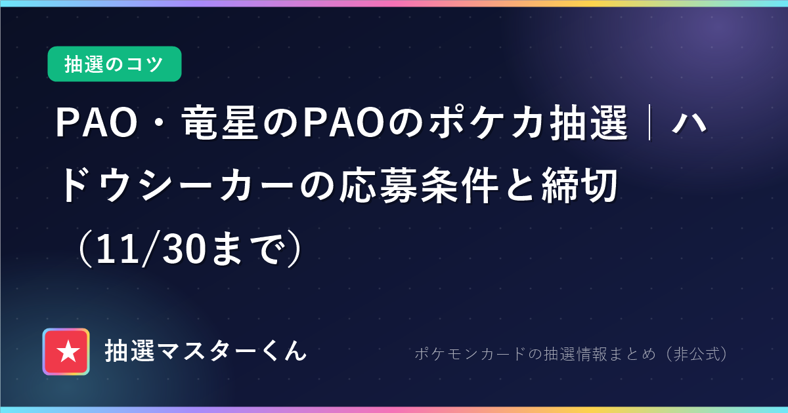

こんにちは、じずじずです🌙 11月も終わりが近づいて、朝晩がすっかり冷えるようになりましたね。
今日、PAO・竜星のPAOでハドウシーカーの抽選が始まりました。わたしも応募するお店をどこにしようか、地図を見ながらちょっと迷っているところです。
この記事では、お店の抽選ページで確認した応募の条件と日程、応募の前に気をつけたいところを、分かりやすくまとめてみました。
この記事の要点
- PAO・竜星のPAOのハドウシーカー抽選は、11月28日(土)11:50〜11月30日(月)23:59に受付です。
- 応募はLivePocket（ライブポケット）で、対象の12店舗から1店舗だけ選びます。2店舗以上に応募すると全部無効になります。
- 1BOX 6,000円（税込）で、1人1BOXまでです。
- 当選発表は12月8日(火)以降の予定で、受け取りは12月12日(土)〜14日(月)に選んだお店で本人が購入します。
- 購入のときは顔写真付きの身分証が必要で、発送や代理での購入はできません。
PAO・竜星のPAOのハドウシーカー抽選の概要
今回は、東京・埼玉・千葉・神奈川の12店舗の分を、1つの抽選ページでまとめて受け付けています。お店の抽選ページに書かれている内容は次のとおりです。
| 項目 | 内容 |
|---|---|
| 商品 | ハドウシーカー 1BOX（6,000円・税込） |
| 応募期間 | 11月28日(土)11:50〜11月30日(月)23:59 |
| 応募方法 | LivePocketの抽選ページから（会員登録が必要） |
| 当選発表 | 12月8日(火)以降の予定 |
| 購入期間 | 12月12日(土)開店〜12月14日(月)閉店 |
| 購入できる数 | 1人1BOXまで（数の変更はできません） |
応募が上限に達すると、予告なしで早めに締め切られることがあると書かれています。応募すると決めたら、締切の夜を待たずに早めに済ませておくと安心ですね。
対象の12店舗と、お店の選び方
対象になっているのは、次の12店舗です。
- PAO 青梅店・堀之内店
- 竜星のPAO 八王子店・立川店・町田店・中野店・多摩境店・池袋店・秋葉原ロケット無線店
- 竜星のPAO 大宮店（埼玉）・千葉中央店（千葉）・横浜店（神奈川）
いちばん大事なのは、応募できるのは12店舗のうち1店舗だけというところです。2店舗以上に応募すると、すべて無効になってしまいます。当選したあとにお店を変えることもできません。
受け取りは12月12日〜14日の3日間だけなので、「この3日間のどこかで、無理なく行けるお店」を選ぶのがおすすめです。ここはわたしも迷いましたが、結局いちばん行きやすいお店にしようと思っています。
応募から受け取りまでの流れ
- LivePocketに無料の会員登録をします（名前は身分証と同じ本名で）。
- 抽選ページで、受け取りたいお店を1つ選んで応募します。
- 12月8日(火)以降に、LivePocketで結果を確かめます。
- 当選したら、12月12日〜14日に選んだお店へ行き、身分証を見せて購入します。
本人確認で気をつけたいこと
購入できるのは当選した本人だけで、家族や友だちに代わりに行ってもらうことはできません。購入のときは、次のような身分証を見せます。
- 運転免許証、マイナンバーカード、パスポート、在留カード
- 健康保険の資格確認書、顔写真付きの学生証、障がい者手帳・療育手帳 など
住民票は使えないと書かれています。LivePocketの登録名と身分証の名前がちがうと買えないこともあるので、登録の内容を一度見直しておくと安心です。当選した権利をほかの人にゆずることもできません。
締切が近い、ほかのハドウシーカーの抽選
当サイトに載っている、受付中のハドウシーカーの抽選から、いくつか紹介しますね（11月28日時点）。
- TSUTAYA今市店（栃木）：11/29(日)20:00締切・店頭でシリアルコードを受け取って応募
- キデイランド浦和美園店（埼玉）：11/29(日)23:59締切・LivePocketで応募
- オレタン（岡山本店・福岡天神店・松山店）：11/29(日)23:59締切・モバイル会員向け
- 福田屋百貨店（宇都宮店・インターパーク店）：12/1(火)15:00締切・LINEで応募
- DMMマイカ：12/3(木)23:59締切・購入金額に応じた口数の抽選
- ゲオ：11/30(月)11:00から12/3(木)17:59まで受付予定
ほかのお店もまとめて見たいときは、ハドウシーカーの抽選・予約情報か抽選一覧をどうぞ。
シュリンク付きで届く、受付中・予定の抽選
BOXをシュリンク（外側の透明フィルム）付きのまま手に入れたい人向けに、当サイトに載っているシュリンク付きの抽選をまとめました（11月28日時点）。
- PAO・竜星のPAO 各店：ハドウシーカー（11/30 23:59締切）
- SHIBUYA TSUTAYA（POKÉMON CARD LOUNGE）：30th CELEBRATION BOX（11/29 23:59締切）
- 福福トレカ 通販店：ロケット団の栄光（11/29 23:59締切）
- DMMマイカ：ハドウシーカー（12/3 23:59締切）
- ポケモンセンターオンライン：30th CELEBRATION BOX など（12/1 14:00〜12/7 16:59）
- ホビーサーチ：ハドウシーカー・30th CELEBRATION BOX など（締切は各商品ページで確認）
- Amazon（招待リクエスト）・ノジマオンライン（シークレット販売会）：招待制
PAOのシュリンクの扱いは、今回の抽選ページには書かれていません。お店の方針は変わることがあるので、気になる人はお店の案内で確かめてくださいね。一覧は抽選一覧（シュリンク付きで絞り込み）でも見られます。シュリンクについてはシュリンク付きで届くポケカ抽選はどこ？でくわしくまとめています。
よくある質問
Q. 立川店と八王子店の両方に応募してもいいですか？
A. いいえ。応募は12店舗のうち1店舗だけで、2店舗以上に応募するとすべて無効になります。
Q. 当選したら家に送ってもらえますか？
A. 発送はありません。12月12日〜14日に、選んだお店で本人が購入します。
Q. 結果はいつ分かりますか？
A. 12月8日(火)以降の予定です。くわしい時間は書かれていないので、LivePocketをこまめに見てみてくださいね。
出典
内容は11月28日時点でお店の抽選ページを確認したものです。日程・条件は変わることがあるので、応募の前にお店の案内で確かめてください。
当サイトは非公式のファンサイトです。価格・日程などは記事公開時点の情報なので、最新の情報は公式サイトや各販売店でご確認ください。